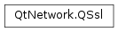

QSsl¶
Detailed Description¶
The QSsl namespace declares enums common to all SSL classes in Qt Network.
-
PySide2.QtNetwork.QSsl.KeyType¶ Describes the two types of keys
PySide2.QtNetwork.QSslKeysupports.Constant Description QSsl.PrivateKey A private key. QSsl.PublicKey A public key.
-
PySide2.QtNetwork.QSsl.EncodingFormat¶ Describes supported encoding formats for certificates and keys.
Constant Description QSsl.Pem The PEM format. QSsl.Der The DER format.
-
PySide2.QtNetwork.QSsl.KeyAlgorithm¶ Describes the different key algorithms supported by
PySide2.QtNetwork.QSslKey.Constant Description QSsl.Rsa The RSA algorithm. QSsl.Dsa The DSA algorithm. QSsl.Ec The Elliptic Curve algorithm QSsl.Opaque A key that should be treated as a ‘black box’ by PySide2.QtNetwork.QSslKey.The opaque key facility allows applications to add support for facilities such as PKCS#11 that Qt does not currently offer natively.
-
PySide2.QtNetwork.QSsl.AlternativeNameEntryType¶ Describes the key types for alternative name entries in
PySide2.QtNetwork.QSslCertificate.Constant Description QSsl.EmailEntry An email entry; the entry contains an email address that the certificate is valid for. QSsl.DnsEntry A DNS host name entry; the entry contains a host name entry that the certificate is valid for. The entry may contain wildcards. Note
In Qt 4, this enum was called
AlternateNameEntryType. That name is deprecated in Qt 5.
-
PySide2.QtNetwork.QSsl.SslProtocol¶ Describes the protocol of the cipher.
Constant Description QSsl.SslV3 SSLv3. When using the WinRT backend this option will also enable TLSv1.0 QSsl.SslV2 SSLv2. Note, SSLv2 support was removed in OpenSSL 1.1. QSsl.TlsV1_0 TLSv1.0 QSsl.TlsV1_0OrLater TLSv1.0 and later versions. This option is not available when using the WinRT backend due to platform limitations. QSsl.TlsV1 Obsolete, means the same as QSsl.TlsV1_1 TLSv1.1. When using the WinRT backend this option will also enable TLSv1.0. QSsl.TlsV1_1OrLater TLSv1.1 and later versions. This option is not available when using the WinRT backend due to platform limitations. QSsl.TlsV1_2 TLSv1.2. When using the WinRT backend this option will also enable TLSv1.0 and TLSv1.1. QSsl.TlsV1_2OrLater TLSv1.2 and later versions. This option is not available when using the WinRT backend due to platform limitations. QSsl.UnknownProtocol The cipher’s protocol cannot be determined. QSsl.AnyProtocol The socket understands SSLv2, SSLv3, TLSv1.0 and all supported later versions of TLS. This value is used by PySide2.QtNetwork.QSslSocketonly.QSsl.TlsV1SslV3 On the client side, this will send a TLS 1.0 Client Hello, enabling TLSv1_0 and SSLv3 connections. On the server side, this will enable both SSLv3 and TLSv1_0 connections. QSsl.SecureProtocols The default option, using protocols known to be secure; currently behaves similar to TlsV1Ssl3 except denying SSLv3 connections that does not upgrade to TLS. Note
most servers understand both SSL and TLS, but it is recommended to use TLS only for security reasons. However, SSL and TLS are not compatible with each other: if you get unexpected handshake failures, verify that you chose the correct setting for your protocol.
-
PySide2.QtNetwork.QSsl.SslOption¶ Describes the options that can be used to control the details of SSL behaviour. These options are generally used to turn features off to work around buggy servers.
Constant Description QSsl.SslOptionDisableEmptyFragments Disables the insertion of empty fragments into the data when using block ciphers. When enabled, this prevents some attacks (such as the BEAST attack), however it is incompatible with some servers. QSsl.SslOptionDisableSessionTickets Disables the SSL session ticket extension. This can cause slower connection setup, however some servers are not compatible with the extension. QSsl.SslOptionDisableCompression Disables the SSL compression extension. When enabled, this allows the data being passed over SSL to be compressed, however some servers are not compatible with this extension. QSsl.SslOptionDisableServerNameIndication Disables the SSL server name indication extension. When enabled, this tells the server the virtual host being accessed allowing it to respond with the correct certificate. QSsl.SslOptionDisableLegacyRenegotiation Disables the older insecure mechanism for renegotiating the connection parameters. When enabled, this option can allow connections for legacy servers, but it introduces the possibility that an attacker could inject plaintext into the SSL session. QSsl.SslOptionDisableSessionSharing Disables SSL session sharing via the session ID handshake attribute. QSsl.SslOptionDisableSessionPersistence Disables storing the SSL session in ASN.1 format as returned by QSslConfiguration.sessionTicket(). Enabling this feature adds memory overhead of approximately 1K per used session ticket.QSsl.SslOptionDisableServerCipherPreference Disables selecting the cipher chosen based on the servers preferences rather than the order ciphers were sent by the client. This option is only relevant to server sockets, and is only honored by the OpenSSL backend. By default, is turned on since this causes problems with a large number of servers. is also turned on, since it introduces a security risk. is turned on to prevent the attack publicised by CRIME. is turned on to optimize memory usage. The other options are turned off.
Note
Availability of above options depends on the version of the SSL backend in use.
© 2018 The Qt Company Ltd. Documentation contributions included herein are the copyrights of their respective owners. The documentation provided herein is licensed under the terms of the GNU Free Documentation License version 1.3 as published by the Free Software Foundation. Qt and respective logos are trademarks of The Qt Company Ltd. in Finland and/or other countries worldwide. All other trademarks are property of their respective owners.